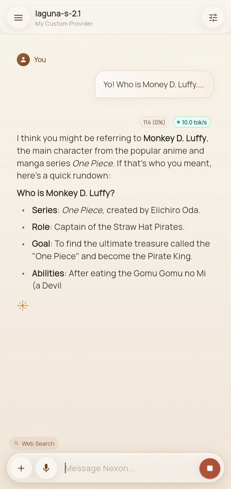

Features
chat that does things
Conversations with agents that run tools, show their work, and answer in one feed — with sources attached when they search.


deep research, on-device
A three-phase pipeline — planner, researcher, synthesizer — that searches live, extracts structured facts, and writes a cited report. In beta, and labeled as such.
you approve every change
Every tool call passes a permission gate you control. File edits show a red/green diff before anything is written.


artifacts that render
Markdown, syntax-highlighted code, and SVG diagrams render inline — not as walls of text — and export cleanly.
any provider, your keys
36 built-in providers plus Claude through the Anthropic API or OpenRouter. Model lists fetch live, thinking depth is yours to set — keys never leave the device.


a real runtime underneath
A Python bridge inside a real Termux userland — GCC, git, python — connected over a local socket. What you see in the logs is what is actually running.
The rest of the toolkit
real shell, real toolchain
Agents run commands inside the actual Termux shell — compile with GCC, run tests, push to git. No sandboxed toy terminal.
surgical file edits
Read, patch, and diff files by line range. Every edit snapshots first, so any change can be rolled back.
permission guard
Every tool call passes a permission gate you control — ask, session, always, or never — before anything executes.
live web search
Chat sessions route search natively to Tavily for real-time context, with sources kept alongside answers.
artifacts & export
Markdown, code, and SVG render in the feed and export to .md or .docx.
claude support, byok
Claude via the Anthropic API or OpenRouter with your own key — prompt caching and extended thinking implemented natively, model lists fetched live.
More of the app
Tool calls, study mode, and explanations — all running on a phone.


Get the app
Latest release: v1.0.24 — free, open source, no account needed to start.
Download APK · v1.0.24 Setup guide Plans